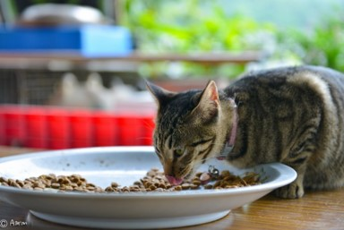
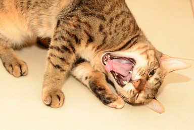
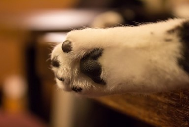
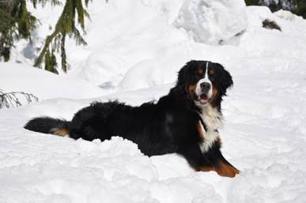
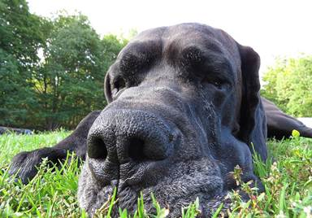

-

貓咪心跳會依照年齡降低
貓咪的脈搏比人類快很多，每分鐘是160-240下不等，所以當你抱著他們時感到他們的心跳加速，別自以為他們是害臊啊！ -

狼吞虎嚥也沒關係
貓咪是沒有臼齒的，所以他們的犬齒是拿來撕裂食物的，如果你餵的食物不需要撕裂，自然就可以通通吞下去了！ -

貓咪喜歡用娃娃音
在面對貓奴時，貓咪喜歡用娃娃音跟我們溝通，同時表達親密。
但是在面對其他貓咪時，就會用大人的聲音囉！ -

肉球檢查貓咪有沒有發燒
因為肉球就是貓咪調節溫度的感覺器官，摸起來都是冰冰涼涼的。
如果摸到熱呼呼的貓肉球，那就有可能毛小孩是發燒了！
-
剖腹生產的幼犬?
剖腹產後如果幼犬是在狗媽媽從麻醉中甦醒過來，並清洗乾淨後送回給她時，狗媽媽會排斥幼犬。(解決：用狗媽媽的尿或是排泄物塗在幼犬身上) -

狗兒為什麼跟你親近?
狗是群居動物。在幼犬出生後第3周到第12周習慣了跟人類相處，那他們很容易把主人當作是同類。 -

狗狗為什麼冬天也伸舌頭?
夏天，狗狗舌頭伸越長代表越熱。 冬天，狗狗興奮或緊張的時候喘氣會喘的比較快，因此伸舌頭自己冷靜。 -

狗狗為什麼喜歡把自己弄得那麼髒?
獵捕的天性使他們善於隱藏自己的行蹤，尤其是氣味。而這點就是把自己掩蓋在周圍有惡臭的物質中。